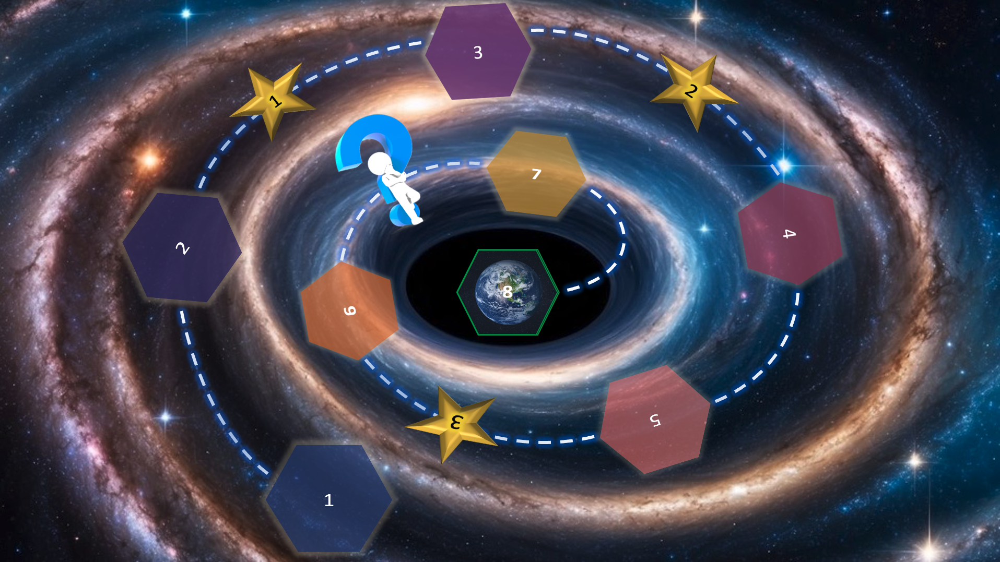
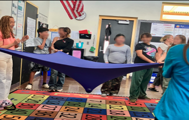
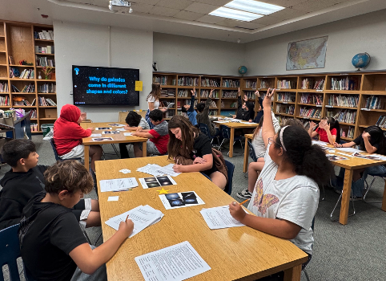

One of my favorite parts of being an astronomer is finding creative ways to share
the science I find so fascinating. Whether I'm developing classroom activities or
presenting my research to a public audience, I enjoy the challenge of making complex
astrophysical concepts accessible without losing the science that makes them interesting.
Discovering Black Holes: Astronomy in the Classroom
How can we introduce students to complex astronomical concepts without
losing the science that makes them so fascinating?
As a NASA Space Grant Fellow at the University of Arizona, I developed
interactive classroom lessons designed to make modern astrophysics
accessible to elementary and middle school students. Through age-appropriate
visual representations, hands-on activities, and guided discussions, students build an
understanding of concepts that might otherwise seem beyond their reach.
Exploring Astronomical Concepts

The Discovering Black Holes gameboard
An Interactive Journey into a Black Hole.
In Discovering Black Holes, students embark on an interactive
journey toward the center of a black hole through eight progressive sections.
They explore everything from the basic properties of these mysterious
objects to the influence of supermassive black holes on galaxy evolution.
AGN feedback animation
Visualizing the Invisible.
Some astronomical processes are difficult to picture, especially
when they unfold on enormous scales. I develop visual representations,
including this AGN feedback animation, to help students connect
abstract physical processes to a more intuitive picture of
what's happening.
Learning Through Investigation

6th graders explore a black hole’s gravity well
Hands-on Demonstrations.
Three stars on the gameboard mark class-wide activities that help
students visualize challenging concepts.
Students model black hole formation with a balloon supernova demonstration,
explore how black holes warp spacetime using a gravity well,
and examine the structure of a supermassive black hole through a diagram.
These activities help connect unfamiliar astronomical concepts
to experiences they can see and explore for themselves.

5th graders investigate galaxy evolution
Galaxy Sorting Activity.
Why do galaxies come in different shapes and colors?
Marked by a question mark on the gameboard, this activity
invites students to become astronomers themselves.
Working in groups with real galaxy images, they identify patterns,
develop hypotheses, and revise their ideas as new evidence emerges.
Their investigation ultimately reveals how galaxies evolve as their
cold gas supplies are depleted and star formation shuts down.
The design and development of Discovering Black Holes
is described in an astronomy education manuscript currently
in preparation.